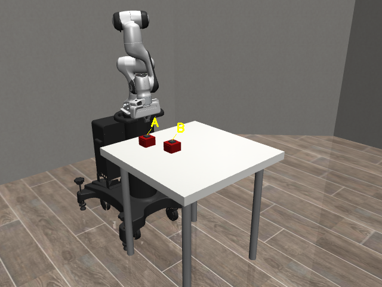
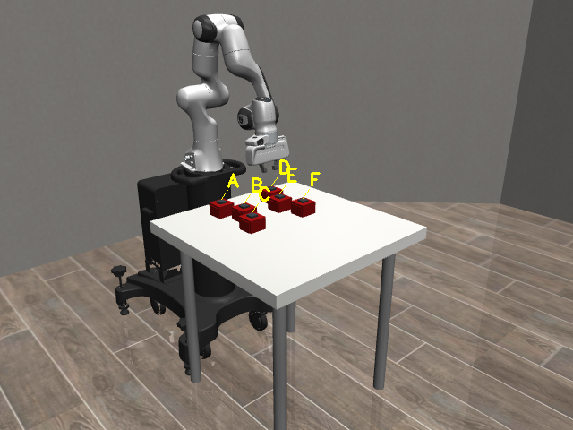
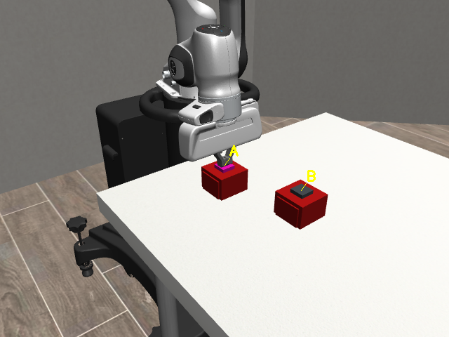
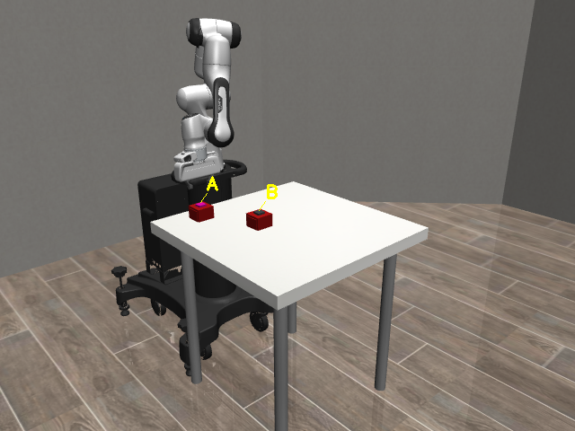
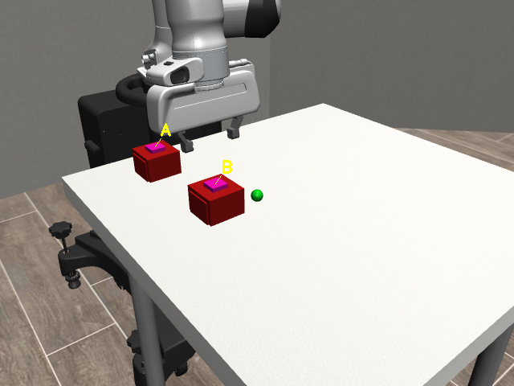
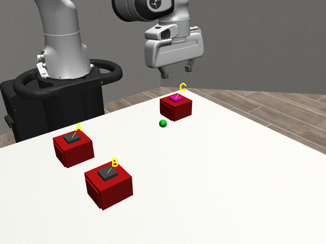
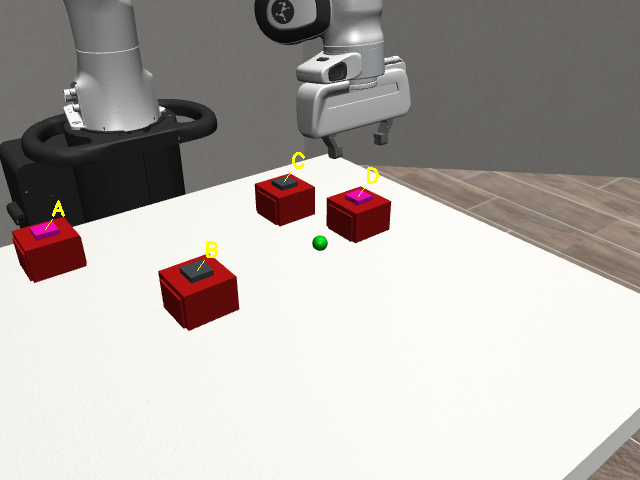
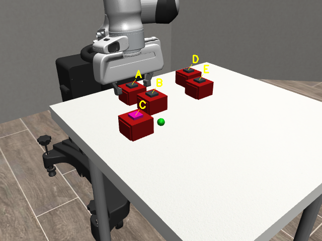
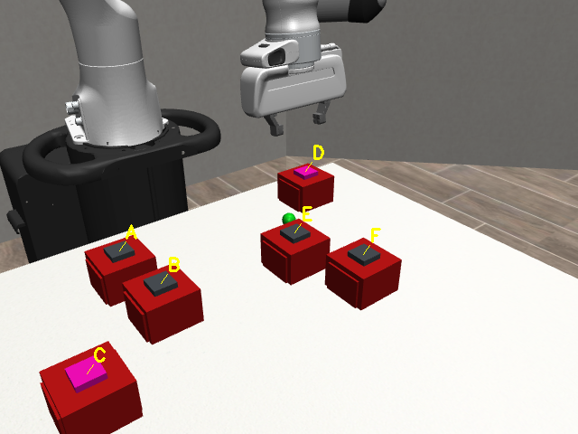
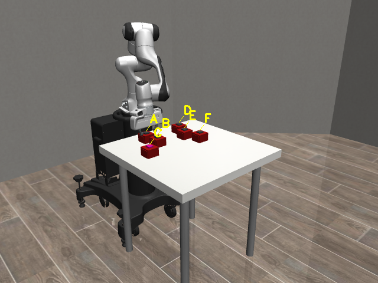

推动
接触后移动，目标实例位移超过 0.018 m 即确认 movable。
Panda 机械臂依次推动、点击并垂直抓取多个盒子，把不可见的问题转化为可观察证据；最后由本地 Qwen3-VL 判断揭示区域是否出现绿色小球。

属性按依赖顺序逐项验证。任何一项不满足，系统立即排除当前候选，把动作留给更有可能的盒子。

接触后移动，目标实例位移超过 0.018 m 即确认 movable。

末端垂直向下，按钮红色变为洋红色即确认 clickable。

左右指垫均接触后才抬升，盒体与夹爪全程保持一致。

本地 Qwen 独立发现绿色小球，并保留原始 JSON 回答。
代码按配置、环境、控制、感知、状态和呈现分层；运行器组织流程，但不把不同职责混在一起。
数量、布局、属性组合与目标位置不断变化。所有图片均来自最终真实运行，所有绿色球结论均由本地 Qwen 给出。
完整比较 A、B；最终选择 B
893 帧 · 59.5 秒

A、B逐级排除；最终选择 C
744 帧 · 49.6 秒

三种淘汰原因；最终选择 D
1,174 帧 · 78.3 秒

不规则两排布局；最终选择 C
692 帧 · 46.1 秒

两次抓取判断；最终选择 D
1,185 帧 · 79.0 秒
最丰富的场景不是直接命中目标，而是保留否定证据、继续搜索，直到三个属性全部成立。

A 因不可推动被排除；B 可推动但不可点击；C 可推动、可点击，但抓取后 Qwen 判断没有绿色小球；系统继续验证 D，并在盒体被移开后发现绿色小球。
系统完成了机械臂主动交互、RGB-D 属性测量、本地多模态模型判断与自动验收的完整闭环。最终成果不仅是正确选择目标，更是一套清晰、连续、可解释并可复查的机器人感知过程。